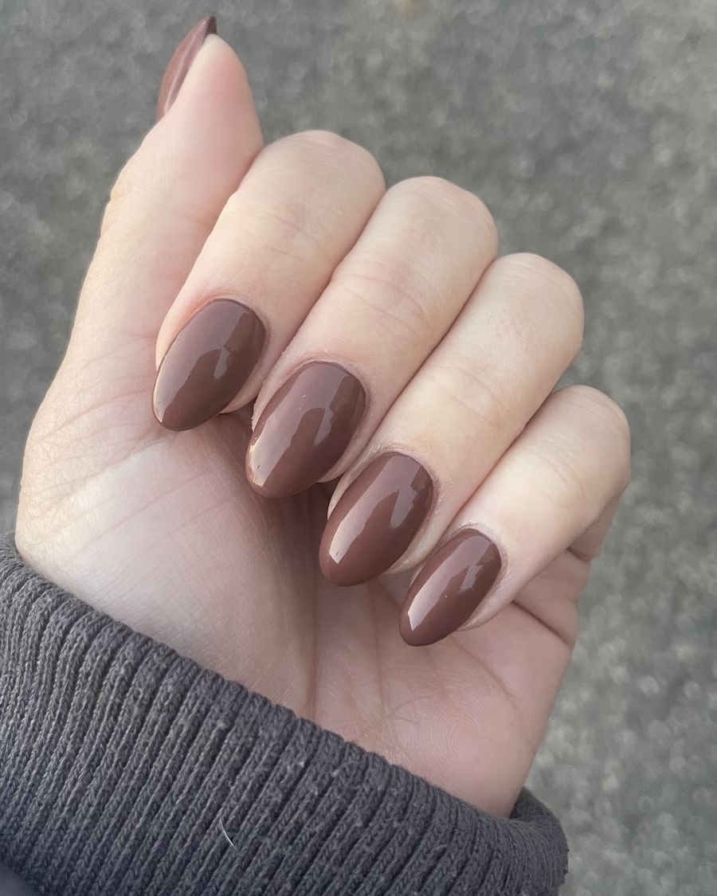
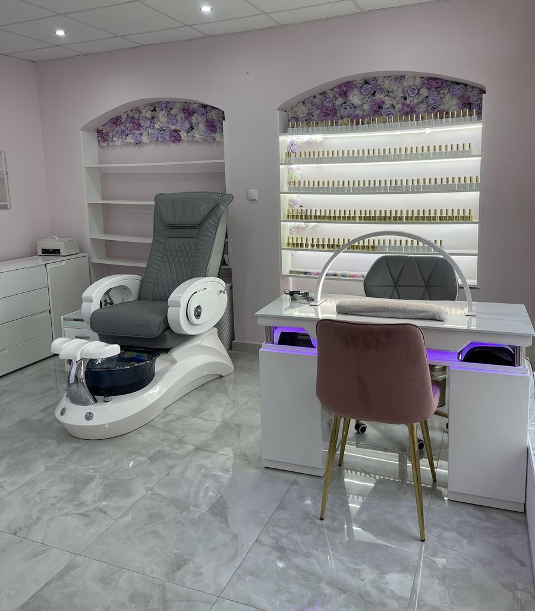

Nehty

Klepněte na nehet a uvidíte celou ruku.
„Slečna je milá a vždy ochotně poradí s výběrem.“
Ilona
Recenze
„Naprosto krásnej salonek, slečna moc hodná, šikovná a pečlivá. Mám z nehtů radost, vypadají krásně i péče byla skvělá.“
Vendula
„Naprosto skvělé! Vždy je slečna maximálně pečlivá, precizní a milá. Kdykoliv chci něco upravit nebo změnit, není absolutně žádný problém a vždy mi vyjde vstříc. Po celou dobu se ujišťuje, že jsem spokojená, což je za mě obrovské plus. Nehty jsou pokaždé dokonale udělané a odcházím nadšená. Moc doporučuji všemi deseti!“
Natálie
„Salón jsem navštívila třikrát a pokaždé jsem odcházela spokojená. Slečna je velmi pečlivá a precizní. Nehty drží a jsou pevné. Určitě se budu vracet, můžu doporučit!“
Anna
Objednání
Termín domluvíme po telefonu.
605 441 101- Pondělí až pátek 9:00–18:00
- Sobota a neděle zavřeno
Valdštejnská 284/11, 460 01 Liberec – Nové Město
Trasa v Mapách Google
„Prostředí je příjemné a čisté. Vyhovovalo mi, že jsem tam byla jenom já a nebylo to přeplněné lidmi.“
Eliška